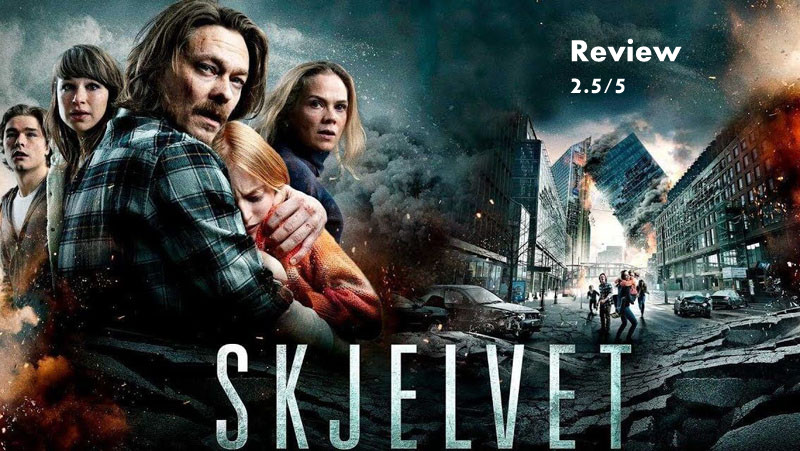

Skjelvet/The Quake Review by Abhijith A G

Posted By : Abhijith A G | Date : 04-03-2019
Genre: Disaster Film
Language: Norwegian
Year: 2018
2015 ഇറങ്ങിയ ഡിസാസ്റ്റർ സിനിമയായ “The Wave”ന്റെ സീക്വൽലാണ് The Quake. ആദ്യസിനിമയിലെ പ്രധാനകഥാപാത്രങ്ങൾ ഇതിലുമുണ്ട് കഥനടക്കുന്ന സ്ഥലും ഡിസാസ്റ്ററും വേറെയാണെന്നുമാത്രം.അതുകൊണ്ടുതന്നെ ആദ്യ സിനിമ കാണാത്തവർക്ക് ഇതുകാണാവുന്നതാണ്.

ടൂറിസ്റ്റ് സ്പോട്ടായ Geirangerൽ 2015ലുണ്ടായ വമ്പൻ തിരമാലകളിൽ നിന്നും തുടർന്നുണ്ടായ വെള്ളപ്പൊക്കത്തിൽ നിന്നും ആളുകളെ രക്ഷിക്കുകയും സ്വന്തം ഫാമിലിയെ രക്ഷിക്കുകയും ചെയ്ത ജിയോളജിസ്റ്റ് ക്രിസ്റ്റയിൻ ഇപ്പോൾ നോർവേയിൽ പ്രശസ്തനാണ്. ദുരന്തമുണ്ടാക്കിയ മാനസിക ആഘാതം മാറിയിട്ടില്ലാത്ത ക്രിസ്റ്റയിൻ ഭാര്യയിൽനിന്നും മക്കളിൽ നിന്നും അകന്നു മാറി ഇപ്പോഴും റിസേർച്ചിനും പഠനത്തിനും പുറകെയാണ്.
ഓസ്ലോ പട്ടണത്തിലെ ടണലുകളെ കുറിച്ച് റിസേർച് ചെയ്യുമ്പോഴാണ് റോഡ് യാത്രക്കായി പണിത ഓസ്ലോ പട്ടണത്തിലെ ടണലിൽ തന്റെ സുഹൃത്തായ മറ്റൊരു ജിയോളജിസ്റ്റ് മരിച്ചു എന്ന ദുഃഖവാർത്ത അയാളെ തേടിയെത്തുന്നത്. തന്റെ സുഹൃത്തിന്റെ മരണകാരണം വെറുമൊരു അപകടമല്ല എന്ന് മനസിലാക്കിയ അയാൾ അതിനെക്കുറിച്ച് വിശദമായ പഠനം നടത്തുന്നതും തുടർന്നുള്ള സംഭവങ്ങളുമാണ് സിനിമ.
ആദ്യ സിനിമ പോലെ ഇവിടെ ദുരന്തത്തിലേക്ക് ആദ്യമേ പോകാതെ സാവധാനം ദുരന്തമുണ്ടാവുന്നതിനു മുൻപുള്ള ക്രിസ്റ്റിന്റെ അനേഷണവും തുടർന്നു വരാൻപോകുന്ന അപകടത്തിന്റെ സൂചനകൾ ഓരോന്നായി അയാൾക്ക് കിട്ടുന്നതുമാണ് കാണിക്കുന്നത്. സിനിമയിലെ ക്ലൈമാക്സ് ഒഴിച്ച് ഭൂരിഭാഗവും ക്രിസ്റ്റിന്റെ അനേഷണത്തോടൊപ്പം അയാളുടെ കുടുംബവുമായുള്ള പ്രശ്നങ്ങളും ചേർത്ത് അവതരിപ്പിച്ചിരിക്കുന്നു .ത്രില്ലിങ്ങായിട്ടുള്ള സംഗീതവും മികച്ച സിനിമാട്ടോഗ്രഫിയുമാണ് ചിത്രത്തിന്റെ വലിയ പോസിറ്റീവ്. സിനിമയുടെ പേരിൽ തന്നെയുള്ള നാച്ചുറൽ ഡിസാസ്റ്റർ കുറിച്ചു നേരമേ സിനിമയിൽ ഉള്ളു എന്നത് പോരായിമയായി തോന്നി. ആദ്യ സിനിമയുമായി യാതൊരു ബന്ധവും ഇതിന്റെ കഥക്കില്ല അതിനാൽ ആദ്യത്തേത് കാണാതെ ഇതും കാണാവുന്നതാണ്.The Wave സിനിമയുടെ അത്രെയും മികച്ചതല്ല എന്നാലും ഡിസാസ്റ്റർ സിനിമകൾ ഇഷ്ടമുള്ളവർക്ക് ഒരുതവണ കാണാനുള്ളതുണ്ട്.
My Rating : 2.5/5,Average
You can check everything you wanna know about the movie from: Skjelvet/The Quake
To check his blog visit: The Quake (2018)